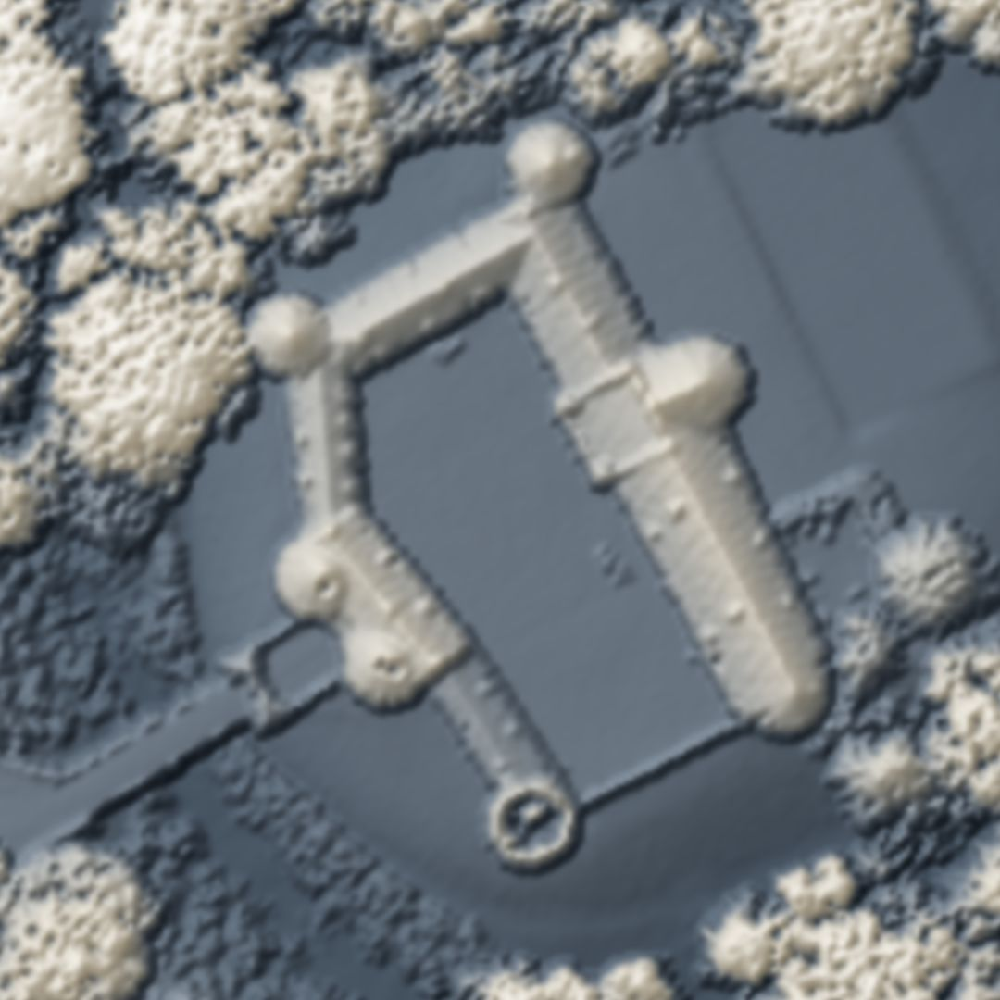
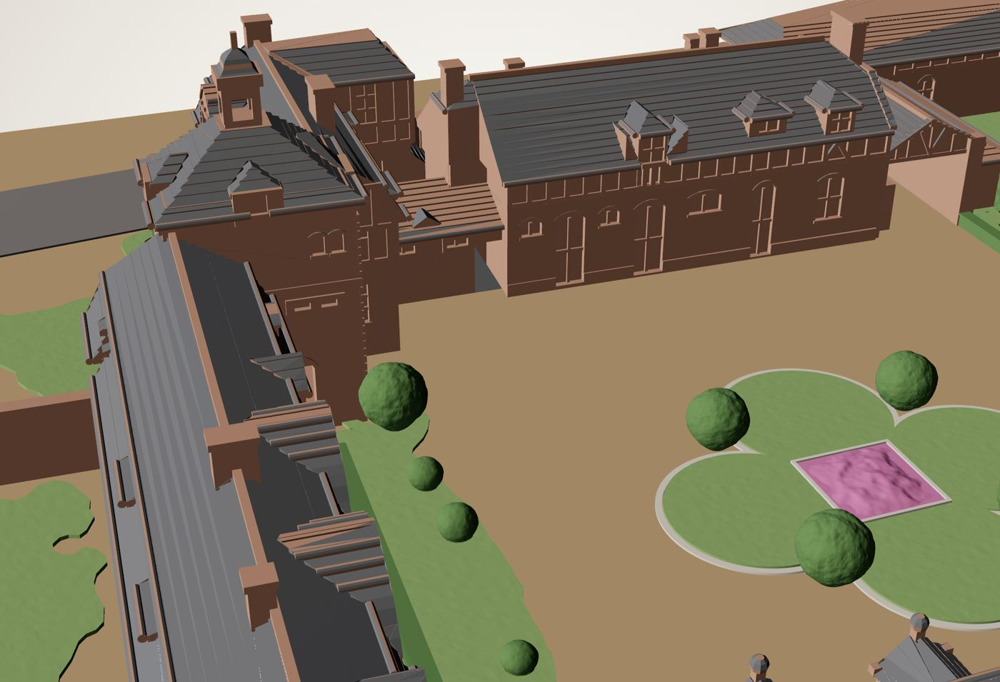
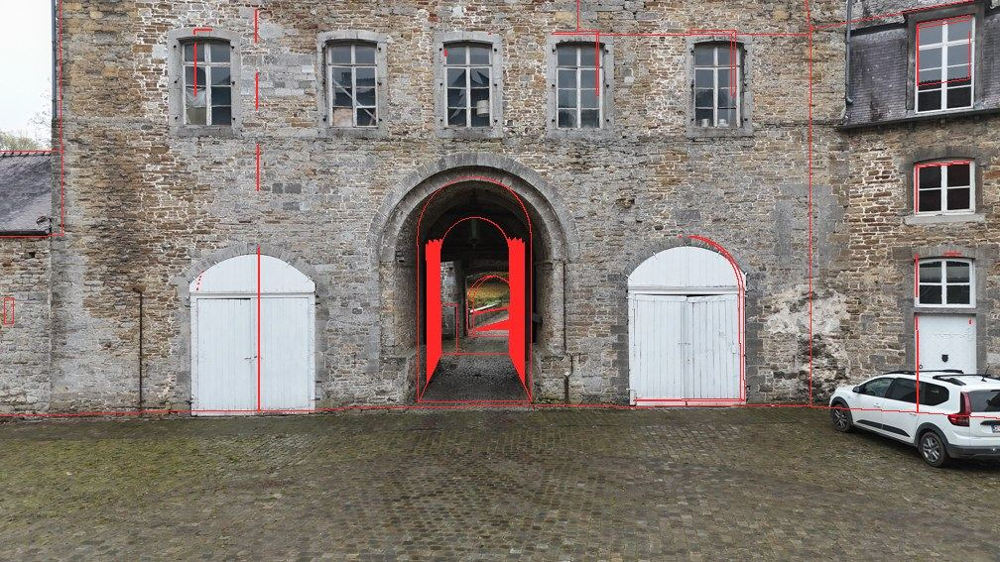
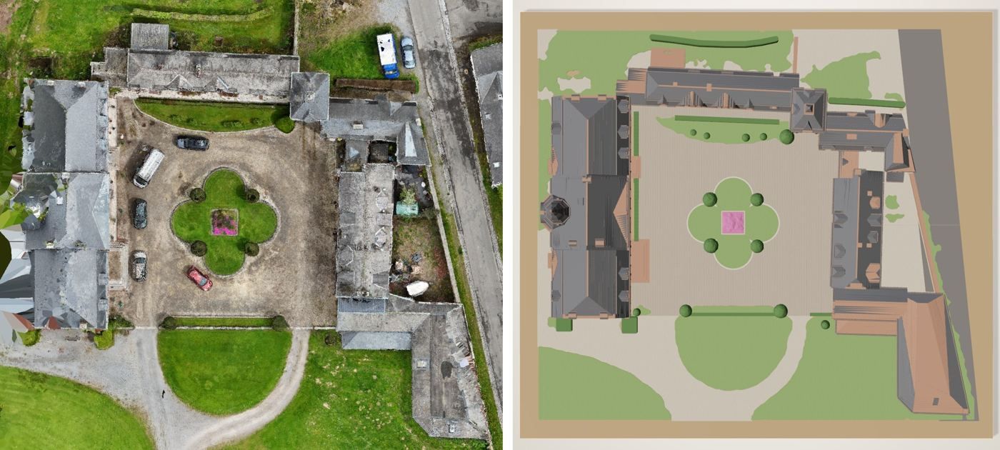

Maquettes de châteaux et de bâtiments, imprimées en 3D
Chaque maquette part d'un relevé précis du bâtiment par drone, recoupé avec des données laser aériennes. Toitures, fenêtres et cheminées sont mesurées puis restituées à l'échelle, et la maquette est montée sur un socle en bois.
Nicolas Lamine, bio-ingénieur, Wavre

La méthode
Huit étapes, de l'étude du site à la pose, chacune contrôlée avant de passer à la suivante. Illustrations : Boëlhe en Hesbaye, Corroy-le-Château et Bois-Seigneur-Isaac.
Étude du site et plan de vol
Chaque site est étudié avant la visite : relief, végétation, hauteurs des bâtiments, contraintes aériennes. Le vol est ensuite calculé point par point, avec l'angle et la distance de chaque prise de vue.

Acquisition aérienne
Une seule visite sur place, d'une à deux heures, avec l'accord écrit du propriétaire. Le drone suit le plan calculé et couvre l'ensemble du bâtiment, toitures et façades, sous de multiples angles.

Référencement altimétrique
Les mesures sont recoupées avec des relevés laser aériens. Hauteurs de gouttières et de faîtes, pentes de toiture et relief du terrain sont ainsi fixés à quelques décimètres près. À Corroy, chaque versant d'ardoise a été mesuré individuellement.


Reconstruction photogrammétrique
Les prises de vue sont reconstruites en trois dimensions et géoréférencées. Il en sort une vue de dessus à 3 centimètres par pixel et des relevés de façade à l'échelle, sur lesquels chaque baie est comptée et cotée.


Modélisation
Le bâtiment est entièrement redessiné à partir des mesures, volume par volume, jusqu'aux lucarnes, cheminées et ouvrages d'art. Le terrain est restitué avec son relief réel.


Contrôle de conformité
Le modèle est confronté aux prises de vue réelles, façade par façade. Chaque écart est repéré et corrigé avant la fabrication.


Préparation à la fabrication
La maquette est décomposée en éléments assemblables, ajustés au dixième de millimètre, pour que les joints restent invisibles une fois montée.

Fabrication et montage
Les éléments sont fabriqués en couches d'environ un dixième de millimètre, en blanc ou en deux teintes, puis montés sur un socle en bois avec une plaque gravée au nom du lieu.


Vous avez un bâtiment en tête ?
Appelez-moi. En quelques minutes, je vous dis si le vol est possible, quelle taille de maquette convient et dans quel délai.
Contact
Je suis bio-ingénieur, formé à la géomatique et au traitement de données spatiales. NADIRE est né d'une première maquette, celle du domaine de Boëlhe.
Le plus simple est de m'appeler. Vous pouvez aussi m'écrire avec l'adresse du bâtiment, la taille de maquette souhaitée et, si vous en avez, quelques photos ou plans. Je réponds sous 48 heures.
- nicolaslamine@outlook.com
- Téléphone
- +32 472 09 89 22
- Adresse
- Wavre, déplacements dans toute la Belgique
Les vols se font avec l'accord écrit du propriétaire. Aucune photo n'est publiée sans son accord.